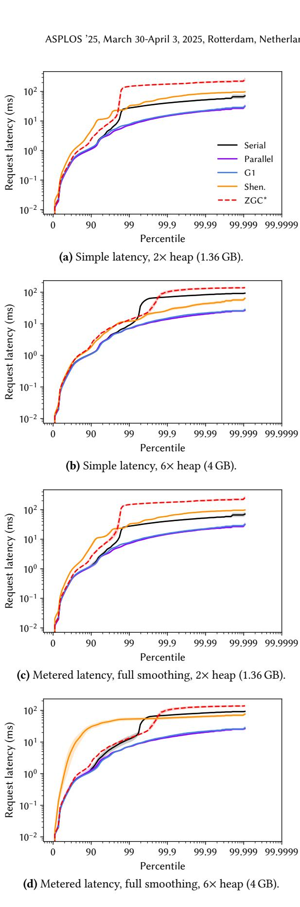
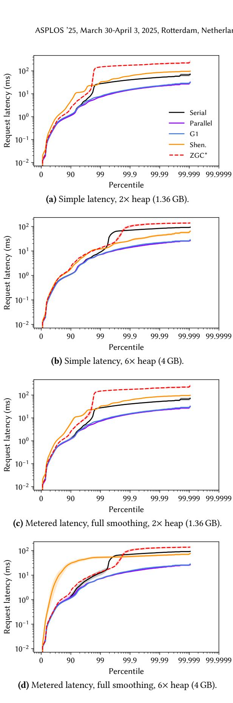

Rethinking Java Performance Analysis 论文解析¶
0. 论文基本信息¶
作者 (Authors): Stephen M. Blackburn, Zixian Cai, Rui Chen, et al.
发表期刊/会议 (Journal/Conference): ASPLOS
发表年份 (Publication Year): 2025
研究机构 (Affiliations): Google, Australian National University, ByteDance, IOP Systems, Canva, The University of Sydney
1. 摘要¶
目的
- 针对 Java 性能分析领域中方法论滞后于技术创新的严峻挑战，本文旨在通过全面革新基准测试套件和引入新的分析方法，重新夯实该领域的经验研究基础。
- 具体目标包括：揭示当前生产级 Java 虚拟机（特别是垃圾回收器）中被忽视的性能开销，并为社区提供一套现代化、多样化且易于使用的工具与方法论指导。
方法
- 发布 DaCapo Chopin 基准套件：这是对经典 DaCapo 套件的一次重大更新，包含 22 个全新或完全刷新的工作负载，覆盖从移动到服务器的应用场景，最小堆大小范围从 5 MB 到 20 GB。
- 集成创新的分析方法论：
- 采用 主成分分析 (PCA) 对 22 个工作负载在 47 个维度上的特性进行量化，以证明其多样性。
- 引入并应用 下界开销 (Lower Bound Overhead, LBO) 方法来系统性地评估垃圾回收器的真实 CPU 开销。
- 为 9 个延迟敏感型工作负载设计并实现了直接测量用户感知延迟 (user-experienced latency) 的机制，包括 Simple Latency 和 Metered Latency 两种度量方式，摒弃了不准确的 GC 暂停时间代理。
- 系统性实验设计：在 OpenJDK 21 上，使用五种生产级垃圾回收器（Serial, Parallel, G1, Shenandoah, ZGC），在不同堆大小（1x 到 6x 最小堆）下进行全面的性能评估。
 Figure 4. Principal components analysis of the 22 DaCapo workloads with respect to the 33 nominal statistics which had non-null results for all benchmarks.
Figure 4. Principal components analysis of the 22 DaCapo workloads with respect to the 33 nominal statistics which had non-null results for all benchmarks.
结果
- 垃圾回收器开销巨大且被低估：即使在最有利的条件下（大堆），垃圾回收器也会消耗 15% 的总 CPU 周期。对于较新的低延迟回收器（如 Shenandoah, ZGC），在小堆场景下，其开销可高达 17倍，在大堆下也达到 63%。
- 墙钟时间与总 CPU 时间存在显著差异：并发回收器（如 G1, Shenandoah）虽然能改善墙钟时间，但其总 CPU 开销 (TASK_CLOCK) 极高，这在多租户或资源受限环境中是巨大的隐性成本。
- 用户感知延迟并未随新回收器而普遍改善：在
h2等工作负载上，新一代低延迟回收器（Shenandoah, ZGC）的尾部延迟表现甚至不如传统的 G1 或 Parallel 回收器。 - 工作负载高度多样化：PCA 分析证实，DaCapo Chopin 中的 22 个工作负载在微架构特征、内存行为等方面分布广泛，有效避免了基准测试的同质化问题。
 (b) Lower bound total CPU overheads (Linux TASK_CLOCK). Figure 1. Lower bounds on the overheads of five OpenJDK 21 production garbage collectors with their default settings, as a function of heap size, showing the geometric mean of overhead over all 22 DaCapo Chopin benchmarks. We only plot data points where the respective collector can run all 22 benchmarks to completion. In the best case, wall clock overheads are 9 % (G1 and Parallel) and total CPU overheads are 15 % (Serial). At smaller heaps, overheads exceed 2×.
 Figure 6. User-experienced latency for h2, plotting the latency distribution for 100000 requests using each collector.
(b) Lower bound total CPU overheads (Linux TASK_CLOCK). Figure 1. Lower bounds on the overheads of five OpenJDK 21 production garbage collectors with their default settings, as a function of heap size, showing the geometric mean of overhead over all 22 DaCapo Chopin benchmarks. We only plot data points where the respective collector can run all 22 benchmarks to completion. In the best case, wall clock overheads are 9 % (G1 and Parallel) and total CPU overheads are 15 % (Serial). At smaller heaps, overheads exceed 2×.
 Figure 6. User-experienced latency for h2, plotting the latency distribution for 100000 requests using each collector.
结论
- 方法论的停滞是系统性风险：研究社区长期依赖过时的基准和不完善的评估方法（如仅用 GC 暂停衡量延迟），导致了对现代运行时系统真实开销的集体性忽视。
- DaCapo Chopin 是关键的基础设施：该套件及其内置的 LBO 和 用户感知延迟 等新方法，为未来的研究提供了更严谨、更贴近现实的分析框架。
- 呼吁持续投入：为了确保系统研究的健康发展，学术界和工业界必须持续投资于基准测试套件的维护和性能分析方法论的创新，以快速识别有前途和无前途的研究方向。
2. 背景知识与核心贡献¶
研究背景
- 计算机系统领域的研究高度依赖于代表性的基准测试（benchmarks）和严谨的方法论来为创新提供实证基础。
- 然而，维护高质量的基准测试套件极其困难，而研究领域本身又在飞速发展，这导致了方法论的演进常常滞后于技术创新，存在**集体性方法论疏忽（collective methodological inattention）**的风险。
- Java作为广泛部署的语言，其性能分析尤其面临此挑战。现有的主流基准套件（如旧版DaCapo）已显陈旧，无法充分反映当代应用（如移动、服务器、微服务、高并发）的特性和需求。
研究动机
- 作者通过一个关于**生产级垃圾回收器（Garbage Collector, GC）**性能的案例研究揭示了当前方法论的不足。
- 使用初步更新的基准套件分析发现，即使是表现最好的GC，在最优情况下也会消耗15%的CPU周期；而为追求低延迟设计的新一代GC（如Shenandoah, ZGC），其开销在小堆内存下甚至高达17倍，在大堆内存下也达到63%。
- 这些显著的性能开销长期以来未被充分认识，作者认为其根源在于性能评估方法论的四大失败：
- 未能系统性地探索GC固有的时间-空间权衡（time-space tradeoff），即不通过改变堆大小来评估GC性能。
- 错误地使用GC暂停时间（GC pauses）作为用户感知延迟（user-experienced latency）的代理指标，而忽略了多个短暂停对用户体验的累积破坏效应。
- 未能衡量总计算开销（total computational overheads），仅关注墙钟时间（wall clock time），忽视了在多核、多租户环境下GC线程消耗的全部CPU资源（通过
TASK_CLOCK衡量）。 - **缺乏多样化且具有代表性的现代工作负载（workloads）**来进行全面评估。
(b) Lower bound total CPU overheads (Linux TASK_CLOCK). Figure 1. Lower bounds on the overheads of five OpenJDK 21 production garbage collectors with their default settings, as a function of heap size, showing the geometric mean of overhead over all 22 DaCapo Chopin benchmarks. We only plot data points where the respective collector can run all 22 benchmarks to completion. In the best case, wall clock overheads are 9 % (G1 and Parallel) and total CPU overheads are 15 % (Serial). At smaller heaps, overheads exceed 2×.
核心贡献
- 发布了DaCapo Chopin基准套件：这是对经典DaCapo套件的一次彻底革新，耗时十四年开发。
- 引入了8个全新的工作负载，并全面刷新了所有现有工作负载。
- 覆盖从手机到服务器的广泛应用领域，最小堆大小范围从5 MB到20 GB。
- 包含9个对延迟敏感的工作负载，如基于Spring、Cassandra、Kafka等现代框架构建的微服务。
- 通过主成分分析（PCA） 对22个工作负载在47个维度上进行表征，证明了其多样性。
Figure 4. Principal components analysis of the 22 DaCapo workloads with respect to the 33 nominal statistics which had non-null results for all benchmarks.
- 提出并集成了新的性能评估方法论：
- 用户感知延迟度量：摒弃GC暂停时间，直接测量每个事件（如请求、帧渲染）的延迟，并创新性地提出了Metered Latency来模拟真实系统中的请求排队效应。
 Figure 3. DaCapo Chopin records the time for each event for its latency-sensitive workloads, avoiding the need for users to resort to using misleading proxies such as GC pause times. These figures plot the distribution of request latencies for cassandra for each of OpenJDK 21’s five production collectors, with the 95th percentile indicated by the shaded area. Even at the generous 6.0× heap, the newer collectors do not deliver better latency than G1 on this workload.
Figure 3. DaCapo Chopin records the time for each event for its latency-sensitive workloads, avoiding the need for users to resort to using misleading proxies such as GC pause times. These figures plot the distribution of request latencies for cassandra for each of OpenJDK 21’s five production collectors, with the 95th percentile indicated by the shaded area. Even at the generous 6.0× heap, the newer collectors do not deliver better latency than G1 on this workload. - 更低的GC开销界限（Lower Bound Overhead, LBO）：采用一种透明的方法来估算GC的真实开销，同时报告墙钟时间开销和总CPU开销（TASK_CLOCK）。
- 名义统计（Nominal Statistics）：为每个工作负载提供跨47个维度（如分配率、缓存敏感性、编译器敏感性等）的预计算特征和排名，帮助研究者理解工作负载行为。
- 用户感知延迟度量：摒弃GC暂停时间，直接测量每个事件（如请求、帧渲染）的延迟，并创新性地提出了Metered Latency来模拟真实系统中的请求排队效应。
- 提供了具体的、可操作的方法论建议，以指导未来的研究，例如：
- 在评估GC时，应在多种堆大小下进行测试。
- 必须报告用户感知延迟及其完整分布（如百分位数），而非单一指标。
- 应同时关注墙钟时间和总CPU时间。
- 通过一套易于使用的框架，将上述新工作负载和新方法论整合在一起，旨在推动整个领域提升其实证研究的严谨性。
3. 核心技术和实现细节¶
0. 技术架构概览¶
整体技术架构
本文提出了一套用于Java性能分析的综合性新框架，其核心目标是解决因方法论滞后于技术创新而导致的重要性能回归被忽视的问题。该框架由三大支柱构成：一个全面革新的基准测试套件、一套集成的先进方法论，以及一个用于验证和展示的分析流程。
-
DaCapo Chopin 基准测试套件：这是整个架构的数据与工作负载基础。
- 包含 22个经过全面更新或全新引入的真实世界应用，覆盖从移动端到服务器端的广泛领域。
- 提供了 47个维度的nominal statistics（名义统计），对每个工作负载进行深度刻画，包括最小堆大小、分配率、对缓存/编译器的敏感性等。
- 通过主成分分析 (PCA) 证明了套件内工作负载的高度多样性，确保了评估的全面性。
- 特别集成了 9个延迟敏感型工作负载（如基于Spring、Cassandra、jMonkey Engine的应用），为现代应用场景提供支持。
-
集成化的新方法论：这是架构的分析引擎，旨在解决传统评估中的四大失败点。
- 时间-空间权衡分析：强制要求在多种堆大小（以各工作负载的最小堆大小为基准）下评估垃圾回收器（GC），以揭示其真实性能特征。
- 用户感知延迟度量：摒弃了过时的GC暂停时间代理指标，直接测量并报告两种新型延迟：
- Simple Latency：直接记录每个事件（如请求、帧渲染）的实际耗时。
- Metered Latency：通过合成均匀的请求到达时间，模拟真实系统中延迟造成的级联排队效应，更准确地反映用户体验。
- 垃圾回收开销的下界估算 (LBO)：采用一种透明且易于实施的方法，通过对比不同GC的可归因成本，估算出一个接近理想零成本GC的基线，从而计算出总CPU开销和挂钟时间开销的保守下界。
- 工作负载特性驱动的实验设计：利用套件内置的nominal statistics指导实验配置，确保评估的科学性和针对性。
-
端到端的分析与验证流程：该架构不仅提供工具和方法，还展示了如何将其应用于当代生产环境（OpenJDK 21）。
- 使用上述套件和方法论，对OpenJDK 21中的五个生产级垃圾回收器（Serial, Parallel, G1, Shenandoah, ZGC）进行了系统性评估。
- 分析揭示了关键发现，例如：即使在最优情况下，GC也会消耗15%的CPU周期；新一代低延迟GC在某些工作负载上并未带来预期的延迟优势，反而可能因高CPU开销而损害性能。
- 这些发现有力地论证了采用新方法论的必要性，并为未来的研究提供了实证基础和方向指引。
(b) Lower bound total CPU overheads (Linux TASK_CLOCK). Figure 1. Lower bounds on the overheads of five OpenJDK 21 production garbage collectors with their default settings, as a function of heap size, showing the geometric mean of overhead over all 22 DaCapo Chopin benchmarks. We only plot data points where the respective collector can run all 22 benchmarks to completion. In the best case, wall clock overheads are 9 % (G1 and Parallel) and total CPU overheads are 15 % (Serial). At smaller heaps, overheads exceed 2×.
Figure 3. DaCapo Chopin records the time for each event for its latency-sensitive workloads, avoiding the need for users to resort to using misleading proxies such as GC pause times. These figures plot the distribution of request latencies for cassandra for each of OpenJDK 21’s five production collectors, with the 95th percentile indicated by the shaded area. Even at the generous 6.0× heap, the newer collectors do not deliver better latency than G1 on this workload.
Figure 4. Principal components analysis of the 22 DaCapo workloads with respect to the 33 nominal statistics which had non-null results for all benchmarks.
1. DaCapo Chopin Benchmark Suite¶
DaCapo Chopin 基准套件的核心构成与特性
- 工作负载规模与来源：该套件包含 22 个工作负载，其中 8 个为全新引入，其余均经过全面刷新。其构成由社区驱动，超过一半的工作负载由工业界用户提议或共同开发，以确保其现实代表性。
- 应用场景覆盖：工作负载的应用领域横跨 mobile (手机) 到 server (服务器)，使其能够评估在不同计算环境下的 Java 性能。
- 内存需求范围：工作负载的最小堆大小（minimum heap sizes）范围极广，从 5 MB 到 20 GB，能够有效测试垃圾回收器（GC）在不同内存约束下的表现。
- 延迟敏感型工作负载：套件特别集成了 9 个延迟敏感型 (latency-sensitive) 工作负载，例如基于 jMonkey Engine 的
jme和基于 Spring 框架的微服务spring，用于直接测量用户可感知的延迟。
工作负载的多维特征化 (Nominal Statistics)
- 特征维度：每个工作负载都通过 47 个维度进行刻画和评分（部分分析使用了33个非空维度），这些维度被作者称为 nominal statistics。
- 评分机制：每个维度上，工作负载根据其在套件中的排名获得 1 到 10 的分数（1为最低，10为最高），便于用户快速比较不同工作负载的相对特性。
- 特征分组：这些统计指标被分为五大类，通过三字母缩写标识：
- Allocation (A**): 如分配率 (ARA)、总分配对象数 (AOA)。
- Bytecode (B**): 如字节码执行频率 (BAL, BAS)。
- Garbage Collection (G**): 如GC暂停次数 (GCP)、内存周转率 (GTO)、最小堆大小 (GMD)。
- Performance (P**): 如对编译器配置的敏感度 (PCC)、对缓存大小的敏感度 (PLS)。
- Microarchitectural (U**): 如每周期指令数 (UIP)、末级缓存未命中率 (ULL)。
- 目的与创新：这种内置的、丰富的特征化是基准套件领域的新颖做法，旨在帮助研究人员理解工作负载行为，并为实验设计（如选择合适的堆大小）提供数据支持。
工作负载多样性验证
- 验证方法：采用 Principal Components Analysis (PCA, 主成分分析) 对工作负载的多样性进行量化分析。
- 分析基础：使用 33 个所有工作负载均有数据的 nominal statistics 原始值（非分数）进行标准化后分析。
- 分析结果：前四个主成分（PC1-PC4）共同解释了超过 50% 的方差，散点图显示各工作负载在主成分空间中分布良好，证明了套件具有实质性的多样性，避免了功能重复。
Figure 4. Principal components analysis of the 22 DaCapo workloads with respect to the 33 nominal statistics which had non-null results for all benchmarks.
延迟度量的新方法
- Simple Latency (简单延迟)：
- 实现原理：直接记录每个事件（如游戏帧渲染、客户端请求）的开始和结束时间。
- 输出：计算并报告延迟的完整百分位数分布（从中位数到 99.99th 百分位）。
- Metered Latency (计量延迟)：
- 实现原理：为了解决简单延迟无法模拟真实系统中请求排队效应的问题，该方法为每个事件分配一个假设的、均匀分布的开始时间。事件的实际延迟为其结束时间与实际开始时间和假设开始时间中较早者之间的差值。
- 参数设置：通过一个平滑窗口 (smoothing window) 来控制假设开始时间的均匀程度。窗口大小为 1ms 时等同于简单延迟，窗口极大时则完全均匀。论文建议 100ms 作为合理的折中。
- 作用：能更真实地反映运行时暂停（如GC）对后续所有事件造成的级联延迟影响。
Figure 3. DaCapo Chopin records the time for each event for its latency-sensitive workloads, avoiding the need for users to resort to using misleading proxies such as GC pause times. These figures plot the distribution of request latencies for cassandra for each of OpenJDK 21’s five production collectors, with the 95th percentile indicated by the shaded area. Even at the generous 6.0× heap, the newer collectors do not deliver better latency than G1 on this workload.
垃圾回收开销的度量方法：Lower Bound Overhead (LBO)
- 核心思想：通过构建一个对理想零开销GC的保守近似（即“蒸馏基线”），来估算真实GC的下界开销。
- 算法流程：
- 使用 JVMTI 接口捕获GC的Stop-The-World (STW) 阶段时间。
- 从总运行时间中减去STW时间，得到一个近似的应用成本。
- 在所有测试的GC和堆大小组合中，找到最低的应用成本，将其作为“蒸馏基线”（分母）。
- 将任意GC配置下的总运行时间（分子）与该基线比较，其比值即为LBO开销。
- 关键特性：由于基线本身仍包含一些无法剥离的GC开销（如写屏障），因此LBO结果是一个系统性保守的估计值（即真实开销的下界）。
- 度量维度：同时报告 wall clock time (挂钟时间) 和 Linux TASK_CLOCK (总CPU时间) 开销，后者能揭示并行GC在多核环境下消耗的总计算资源。
(b) Lower bound total CPU overheads (Linux TASK_CLOCK). Figure 1. Lower bounds on the overheads of five OpenJDK 21 production garbage collectors with their default settings, as a function of heap size, showing the geometric mean of overhead over all 22 DaCapo Chopin benchmarks. We only plot data points where the respective collector can run all 22 benchmarks to completion. In the best case, wall clock overheads are 9 % (G1 and Parallel) and total CPU overheads are 15 % (Serial). At smaller heaps, overheads exceed 2×.
在性能分析中的作用
- 暴露被忽视的开销：通过LBO方法，论文揭示了现代生产级GC即使在最优情况下也消耗至少15%的总CPU周期，且新式低延迟GC（如Shenandoah, ZGC）在小堆或高分配率场景下开销可能急剧上升（高达17倍）。
- 推动方法论革新：DaCapo Chopin 不仅仅是一个基准套件，更是一个集成新方法论的框架。它通过内置的 nominal statistics、Simple/Metered Latency 和对 LBO 方法的支持，直接回应了社区在GC评估中存在的四大方法论缺陷：忽略时空权衡、误用GC暂停时间、忽视总计算开销、缺乏多样化工作负载。
- 提供实证基础：该套件为研究人员提供了一个标准化、易用且方法论严谨的平台，用于评估JVM、编译器和GC等组件的真实性能影响，从而帮助社区更准确地识别有前景和无前景的研究方向。
2. Lower Bound Overhead (LBO) Methodology¶
Lower Bound Overhead (LBO) 方法论的核心思想
- LBO 方法旨在解决一个根本性难题：垃圾回收（GC）的真实开销难以精确衡量。这是因为 GC 的成本不仅包括显式的“Stop-The-World”暂停，还包括大量隐式的、与应用程序交织在一起的成本，例如 allocator 开销、read/write barriers 的执行成本，以及由 GC 策略引起的 cache locality 恶化 等间接影响。
- 该方法基于一个关键洞察：虽然一个零成本的理想 GC（perfect zero-cost GC） 在现实中不存在，但我们可以通过现有技术手段构建一个对其的保守近似（conservative approximation），并以此作为基线（baseline）来衡量所有真实 GC 的开销。
- 由于这个基线本身已经包含了部分无法剥离的 GC 成本，因此通过它计算出的任何真实 GC 的开销都必然是一个下限估计（lower bound），即真实开销只会比这个值更高。
LBO 的具体实现流程
- 步骤一：多配置测量。对每一个 benchmark，在多种堆大小（heap size）下，使用 OpenJDK 21 中所有可用的生产级 GC（Serial, Parallel, G1, Shenandoah, ZGC）分别运行，并收集两种核心指标：
- Wall Clock Time：程序从开始到结束的总耗时。
- Total CPU Time (TASK_CLOCK)：通过 Linux
perf工具的TASK_CLOCK事件获取，它累加了进程中所有线程消耗的 CPU 时间，能反映真实的计算资源占用。
- 步骤二：剥离显式 GC 成本。利用 Java 的 JVMTI (Java Virtual Machine Tool Interface) 接口，精确捕获每次 GC 的“Stop-The-World”暂停时间。将总运行时间减去这些可明确归因的暂停时间，得到一个近似的应用程序纯执行成本（approximated application cost）。
- 步骤三：构建“蒸馏”基线。在所有 GC 和所有堆大小组合下计算出的“近似应用程序纯执行成本”中，找出最小值。这个最小值被用作 “蒸馏成本（distilled cost）”，作为理想 GC 基线的最佳保守近似。
- 步骤四：计算开销下限。对于任何一个具体的 GC 配置（特定的 GC + 特定的堆大小），其 LBO 开销计算公式为：
(Measured Total Cost / Distilled Baseline Cost) - 1。这个比值清晰地展示了该 GC 相对于理想情况的额外开销比例。
LBO 方法的关键参数与设置
- 堆大小范围：实验在
1×到6×的最小堆大小（minimum heap size） 范围内进行。最小堆大小是针对每个 benchmark 单独确定的，确保了不同 workload 之间的公平比较。 - GC 选择：评估对象覆盖了 OpenJDK 21 中全部五个生产级 GC，以全面反映当前技术状态。
- 硬件计数器：依赖 Linux
perf_event_opensyscall 来获取高精度的TASK_CLOCK数据，这对准确衡量总 CPU 开销至关重要。
LBO 的输入、输出及其作用
- 输入：
- 一个或多个 DaCapo Chopin benchmarks。
- 一组待评估的 Garbage Collectors。
- 一系列 Heap Sizes（通常表示为最小堆大小的倍数）。
- 输出：
- 一个量化指标：LBO Overhead，通常以百分比或倍数形式呈现。
- 该指标同时包含 Wall Clock Overhead 和 Total CPU Overhead 两个维度。
- 在整体研究中的作用：
- 揭示隐藏成本：LBO 成功暴露了传统仅关注 Wall Clock Time 或 GC Pause Time 所忽略的巨大开销。如论文图1所示，即使在最优情况下，GC 的 Total CPU Overhead 也高达 15%。
- 提供公平比较基准：通过构建一个统一的、保守的基线，LBO 允许对不同代际、不同设计理念的 GC 进行 apples-to-apples 的比较。
- 驱动方法论革新：LBO 的应用直接支持了论文的核心论点——我们的性能分析方法论已经落后于技术创新。它提供了一个强有力的工具，促使研究社区重新审视和评估现代 GC 的真实代价。
(b) Lower bound total CPU overheads (Linux TASK_CLOCK). Figure 1. Lower bounds on the overheads of five OpenJDK 21 production garbage collectors with their default settings, as a function of heap size, showing the geometric mean of overhead over all 22 DaCapo Chopin benchmarks. We only plot data points where the respective collector can run all 22 benchmarks to completion. In the best case, wall clock overheads are 9 % (G1 and Parallel) and total CPU overheads are 15 % (Serial). At smaller heaps, overheads exceed 2×.
LBO 分析实例：cassandra 与 lusearch
- cassandra workload：
- Wall Clock 视角下，各 GC 在较大堆（>4×）时开销都很小。
- Total CPU (TASK_CLOCK) 视角下，开销急剧上升，G1 在 3× 堆时开销已达 60%，其他并发 GC 甚至超过 200%。
- 原因：cassandra 本身并未完全利用所有 CPU 核心，而并发 GC（如 G1, Shenandoah）则积极利用空闲核心进行后台工作，这在多租户环境中会产生显著的机会成本（opportunity cost）。
- lusearch workload：
- Wall Clock 开销极高，尤其是 Shenandoah，在所有测试堆大小下都超出图表上限（>200%）。
- Total CPU 开销反而相对较低。
- 原因：lusearch 具有极高的 allocation rate (ARA)。当 Shenandoah 无法跟上分配速度时，会启动 mutator throttling 机制，强制限制应用线程的并行度。这导致 Wall Clock Time 恶化，但减少了线程间的同步开销，使得 Total CPU Time 相对可控。
 Figure 5. LBO overheads for cassandra and lusearch.
Figure 5. LBO overheads for cassandra and lusearch.
3. User-Experienced Latency Metrics¶
核心观点
- 该论文提出 Simple Latency 和 Metered Latency 两种指标，旨在直接、准确地度量用户在使用应用时所感知到的真实延迟，从而替代长期被误用的 GC pauses（垃圾回收暂停时间）这一不充分的代理指标。
- 这一方法论创新解决了 Cheng and Blelloch 在二十多年前就指出的问题：多个短暂停顿对用户体验的破坏性可能不亚于一个长暂停，因此仅看暂停时长无法反映真实的响应性。
Simple Latency 的实现原理与流程
- 输入: DaCapo Chopin 套件中的九个 latency-sensitive workloads（延迟敏感型工作负载），包括基于 jMonkey Engine 的
jme和基于 Spring 等框架的八个请求式服务（如cassandra,kafka）。 - 测量机制:
- 对于
jme，系统记录每一帧的渲染开始和结束时间。 - 对于请求式服务，系统记录每一个客户端请求的开始和结束时间。
- 这些时间戳被高效地存储在一个数组中，以最小化测量本身带来的开销。
- 对于
- 输出:
- 工作负载执行完毕后，系统计算所有事件（帧或请求）的延迟（即结束时间减去开始时间）。
- 最终输出完整的延迟分布，具体表现为从 median (50th percentile) 到 99.99th percentile 的一系列百分位数值。
- 用户还可以选择将完整的原始数据保存为文件，用于离线分析。
- 作用: 提供了最基础、最直接的用户感知延迟视图，反映了在没有外部请求队列压力下的应用内部响应能力。
Metered Latency 的实现原理与流程
- 动机: 真实世界的请求式服务通常有外部请求队列。当系统因 GC 等原因变慢时，不仅当前请求会延迟，后续所有排队的请求也会受到影响，形成级联延迟。Simple Latency 无法捕捉这种效应。
- 核心思想: 通过为每个事件分配一个“假设的”均匀分布的开始时间，来模拟外部请求队列的效果。
- 算法流程:
- 在工作负载完成后，系统为所有事件生成一组 uniform synthetic start times（均匀合成开始时间），假设这些请求在整个基准测试执行期间以恒定速率到达。
- 对于每个事件，其 metered latency 被定义为：
事件结束时间 - min(实际开始时间, 假设开始时间)。 - 这种设计确保了 Metered Latency 永远不会低于 Simple Latency，并且能反映出系统变慢对后续“本应按时到达”的请求所造成的累积影响。
- 参数设置:
- 论文提到，均匀合成开始时间是通过对实际开始时间应用一个滑动平均 smoothing function 来实现的。
- Smoothing window（平滑窗口）的大小决定了模拟的逼真程度：
- 窗口大小为 1ms 时，等同于 Simple Latency。
- 窗口大小为整个基准测试的执行时长时，则完全采用均匀分布的假设开始时间。
- 论文建议使用 100ms 的平滑窗口作为合理的折中方案，既能容忍因 JIT 编译器或文件缓存预热导致的整体速率变化，又能有效暴露 GC 等中断事件造成的延迟尖峰。
- 输出: 与 Simple Latency 类似，输出不同平滑窗口下的完整延迟分布（百分位数）。
- 作用: 提供了一个更贴近生产环境的延迟视图，能够揭示系统内部中断（如 GC）对整体服务吞吐和尾部延迟的放大效应。
Figure 3. DaCapo Chopin records the time for each event for its latency-sensitive workloads, avoiding the need for users to resort to using misleading proxies such as GC pause times. These figures plot the distribution of request latencies for cassandra for each of OpenJDK 21’s five production collectors, with the 95th percentile indicated by the shaded area. Even at the generous 6.0× heap, the newer collectors do not deliver better latency than G1 on this workload.
两种指标的对比与作用总结
| 特性 | Simple Latency | Metered Latency |
|---|---|---|
| 核心目标 | 测量单个事件的内部处理延迟 | 模拟并测量外部请求队列下的累积延迟 |
| 是否考虑队列效应 | 否 | 是 |
| 数值关系 | 基准值 | ≥ Simple Latency |
| 适用场景 | 分析应用本身的响应性瓶颈 | 评估系统在持续负载下的服务质量(SLO) |
| 关键参数 | 无 | Smoothing window (推荐 100ms) |
方法论意义
- 这两种内建的延迟度量指标，使得研究人员无需依赖复杂的外部工具或不准确的代理指标（如 GC pauses），就能轻松、系统地评估 Java 运行时（尤其是垃圾回收器）对 user-experienced latency 的真实影响。
- 论文通过
h2和cassandra等工作负载的分析证明，即使是专为低延迟设计的现代收集器（如 Shenandoah, ZGC），在某些工作负载下其 user-experienced latency 表现也可能不如传统的 G1 或 Parallel 收集器，这凸显了直接测量用户感知延迟的必要性和价值。
4. Nominal Statistics and Workload Characterization¶
Nominal Statistics 的设计目标与实现原理
- Nominal Statistics（名义统计量）的核心目标是为 DaCapo Chopin 套件中的每个基准测试提供一个丰富、多维度的行为画像，帮助研究人员快速理解工作负载的特性，从而设计出更科学、更有针对性的实验。
- 其设计理念是将方法论上非平凡但计算上昂贵的分析结果直接打包进基准套件，降低用户进行严谨性能分析的门槛。
- 与初代 DaCapo 仅使用 JVM-neutral（如总分配字节数）的度量不同，Chopin 版本明确采用 OpenJDK 21 的默认配置（如 G1 GC）作为固定的软硬件环境来收集数据，并将这些度量标记为“名义”（nominal），以强调其相对性和上下文依赖性，而非绝对评价。
数据收集与处理流程
- 数据收集分为两大类技术：
- 字节码插桩 (Bytecode Instrumentation)：用于获取与 JVM 实现无关的基础指标，例如 AOA（已分配对象数）、AOL（已分配对象生命周期）等。这些工具随套件一同发布，确保结果可复现。
- 真实性能测量 (Performance Measurement)：在真实的 OpenJDK 21 环境下运行基准测试，利用 JVM 内部遥测（如 GC 日志）和 硬件性能计数器（如 Linux
perf）来捕获运行时行为。
- 对于每个基准测试，系统会收集至少 47 个维度的原始数据。
- 最终呈现给用户的 1-10 分评分并非原始值，而是基于所有 22 个基准测试在该维度上的排名线性映射而来：
- 排名最高（表现最极端）的基准得 10 分。
- 排名最低的基准得 1 分。
- 这种相对排名的设计使得用户可以直观地比较不同工作负载在特定方面的敏感性差异。
核心指标分类与作用
指标通过三字母缩写进行组织，首字母代表其类别：
- Allocation (A*): 描述内存分配行为。
- 例如 ARA（Allocation Rate, MB/sec）衡量分配速率，
lusearch在此指标上得分为 10，表明它是套件中分配压力最大的工作负载。
- 例如 ARA（Allocation Rate, MB/sec）衡量分配速率，
- Bytecode (B*): 描述字节码执行特征。
- 例如 BAS（Bytecode Allocation Sites）统计分配点的数量。
- Garbage Collection (G*): 描述 GC 行为。
- 例如 GMD（GC Minimum Heap for Default size）提供了在默认输入规模下，工作负载能成功运行所需的最小堆大小。这是论文中 Recommendation H2 的关键支撑数据。
- Performance (P*): 描述在不同软硬件配置下的性能敏感性。
- 例如 PLS（Performance sensitivity to Last-level cache Size）和 PMS（Performance sensitivity to Memory Speed）量化了工作负载对底层硬件的依赖程度。
- Microarchitectural (U*): 描述微架构层面的性能特征。
- 例如 UIP（Instructions Per cycle）、ULL（Last Level Cache miss rate）等，揭示了工作负载是计算密集型还是内存密集型。
在整体方法论中的作用
- 指导实验设计：
GMD等指标直接支持了 Recommendation H2，即堆大小应以最小堆的倍数来设定，而非固定值。这确保了不同基准间的公平比较。 - 解释性能现象：当观察到某个优化在
h2o上无效但在biojava上有效时，研究人员可以立即查阅它们的名义统计量。例如，h2o的 ULL 和 USB（后端停顿）得分极高，表明其是内存瓶颈；而biojava的 UIP 得分高，表明其是计算瓶颈。这为性能差异提供了直接解释。 - 验证套件多样性：这些高维统计数据是进行 Principal Components Analysis (PCA) 的基础。通过 PCA，论文量化证明了 DaCapo Chopin 套件的工作负载具有高度多样性，避免了基准测试集内部的冗余。
Figure 4. Principal components analysis of the 22 DaCapo workloads with respect to the 33 nominal statistics which had non-null results for all benchmarks.
输入输出关系总结
| 组件 | 输入 | 输出 | 作用 |
|---|---|---|---|
| 字节码插桩工具 | 基准测试的字节码 | A* 和 B* 类别的原始计数 | 提供与 GC/编译器无关的基础行为数据 |
| 性能测量框架 | 基准测试二进制、OpenJDK 21、硬件平台 | G*, P*, U* 类别的原始性能数据 | 捕获工作负载在真实环境中的动态行为 |
| Nominal Statistics 生成器 | 所有 22 个基准的原始数据 | 每个基准在 47 个维度上的 1-10 分排名 | 为用户提供直观、可比较的工作负载特性摘要 |
| 研究人员 | dacapo -p 命令 |
控制台打印的各维度得分 | 快速理解工作负载，设计并解释实验 |
5. Principal Components Analysis (PCA) for Diversity Validation¶
核心观点
- Principal Components Analysis (PCA) 被用作一种无监督的降维和可视化技术，以客观地验证 DaCapo Chopin 套件中 22 个工作负载 的行为多样性。
- 其核心目标是证明该套件成功覆盖了广泛的程序行为特征，避免了工作负载之间的冗余，从而为性能评估提供了坚实、有代表性的基础。
输入数据与预处理
- 输入源: 分析使用了 33 个名义统计量 (nominal statistics)。这些统计量是从 47 个 预计算指标中筛选出来的，筛选标准是所有 22 个 工作负载在这些指标上都有非空的有效数据。
- 数据性质: 这些统计量涵盖了多个维度，包括 allocation (分配)、bytecode (字节码)、garbage collection (垃圾回收)、performance (性能) 和 microarchitectural (微架构) 特性。
- 数据标准化: 在进行 PCA 之前，对原始数值（而非1-10的排名分数）应用了 standard scaling (标准缩放)，即对每个特征进行线性变换，使其均值为 0，方差为 1。这一步至关重要，因为它消除了不同指标间量纲和数量级的差异，确保每个特征对分析结果的贡献是公平的。
算法流程与参数设置
- 降维目标: PCA 算法将 33 维 的高维特征空间，投影到由少数几个 principal components (主成分, PC) 构成的低维子空间中。
- 主成分选择: 论文选择了前 4 个 主成分进行可视化和分析。这 4 个 主成分共同解释了数据集中超过 50% 的总方差。
- PC1 是最具决定性的分量，解释了 18% 的方差。
- PC2, PC3, PC4 的解释力依次递减，其中 PC4 解释了 11% 的方差。
- 可视化方法: 通过绘制 scatter plots (散点图) 来展示工作负载在由前四个主成分两两构成的平面上的分布情况。
Figure 4. Principal components analysis of the 22 DaCapo workloads with respect to the 33 nominal statistics which had non-null results for all benchmarks.
输出解读与作用
- 输出形式: 输出是一个或多个散点图，图中的每个点代表一个工作负载，点在图中的位置由其在所选主成分上的投影值决定。
- 多样性判定: 直观的几何距离 被用作衡量工作负载间差异的标准。图中显示，22 个工作负载 的点在整个散点图平面上 分布广泛且均匀，没有出现明显的聚类或重叠现象。
- 在整体研究中的作用:
- 验证套件设计: 为 DaCapo Chopin 套件的 diversity (多样性) 和 coverage (覆盖度) 提供了强有力的、量化的证据，证明其成功地从多个维度捕捉了不同的程序行为。
- 支撑方法论主张: 这一分析直接回应了论文的核心论点，即需要 diverse, appropriate workloads (多样化、合适的工作负载) 来进行有效的性能分析。PCA 结果证明了新套件满足了这一关键要求。
- 指导后续研究: 通过揭示工作负载在主要行为特征上的分布，研究人员可以更有针对性地选择子集进行特定领域的研究，或者识别出可能被遗漏的行为模式。
4. 实验方法与实验结果¶
实验设置
- 基准测试套件: 使用 DaCapo Chopin (版本 23.11-chopinMR2)，包含 22个经过全面更新或新增的工作负载，覆盖从移动到服务器的应用场景。
- 运行时环境:
- JVM: OpenJDK 21 (Temurin-21.0.4+7 LTS)。
- 编译器: 使用
-server标志以确保一致的编译器行为。 - 垃圾回收器 (GC): 评估了 OpenJDK 21 中全部五个生产级 GC：Serial, Parallel, G1, Shenandoah, ZGC。
- 执行配置:
- 每个工作负载运行 5次迭代，计时最后一次迭代以确保 JIT warmup 完成。
- 堆大小基准设为工作负载 GMD (Nominal Minimum Heap Size) 的 2倍。
- 对于堆大小敏感性分析，堆大小范围从 1× 到 6× GMD。
- 每个实验配置重复 10次，以计算 95% 置信区间。
- 硬件平台:
- CPU: AMD Ryzen 9 7950X (Zen4架构)，16核32线程，基础频率4.5 GHz（关闭频率缩放）。
- 内存: 64 GB DDR5-4800 (JEDEC 40-39-39-77)。
- 操作系统: Ubuntu 22.04.4 with Linux kernel 6.8.0-40，性能调优（如关闭NMI watchdog）。
结果数据
-
垃圾回收开销 (Lower Bound Overhead, LBO):
- 总体开销: 即使在最有利的情况下（大堆），GC的总CPU开销（TASK_CLOCK）也高达 15%。在小堆情况下，开销可超过 2倍。
- 新旧GC对比: 更新的、以低延迟为目标的GC（如Shenandoah, ZGC）在总CPU开销上通常高于较老的GC（如Serial, Parallel），尤其是在小堆或高分配率场景下。
- 案例分析 - cassandra: 在中等堆（3×）下，G1的任务时钟开销高达 60%，而墙钟开销却很低，表明其有效利用了空闲核心，但带来了显著的总计算成本。
- 案例分析 - lusearch: Shenandoah在此高分配率工作负载上表现出极高的墙钟开销（>2×），但任务时钟开销反而较低，原因是其mutator throttling机制限制了应用线程的并行度，从而减少了竞争开销。
Figure 5. LBO overheads for cassandra and lusearch.
-
用户感知延迟 (User-Experienced Latency):
- 指标创新: 引入了 Simple Latency 和 Metered Latency 来直接衡量用户感知延迟，而非依赖有缺陷的 GC pause time 代理指标。
- 案例分析 - h2: 在h2数据库工作负载上，新的低延迟GC（Shenandoah, ZGC）表现不如G1和Parallel。分析表明，这是因为它们引入了过高的总CPU开销（~70%），拖慢了单个查询的执行速度。
- 延迟分布: 结果以百分位数（如99.99th）和累积分布函数 (CDF) 形式呈现，提供了比单一指标更全面的视图。
Figure 6. User-experienced latency for h2, plotting the latency distribution for 100000 requests using each collector.
Figure 3. DaCapo Chopin records the time for each event for its latency-sensitive workloads, avoiding the need for users to resort to using misleading proxies such as GC pause times. These figures plot the distribution of request latencies for cassandra for each of OpenJDK 21’s five production collectors, with the 95th percentile indicated by the shaded area. Even at the generous 6.0× heap, the newer collectors do not deliver better latency than G1 on this workload.
-
工作负载多样性:
- 通过 Principal Components Analysis (PCA) 对 33个名义统计量进行分析，证明了DaCapo Chopin套件中的22个工作负载在行为上具有高度多样性，覆盖了超过50%的总方差。
Figure 4. Principal components analysis of the 22 DaCapo workloads with respect to the 33 nominal statistics which had non-null results for all benchmarks.
- 通过 Principal Components Analysis (PCA) 对 33个名义统计量进行分析，证明了DaCapo Chopin套件中的22个工作负载在行为上具有高度多样性，覆盖了超过50%的总方差。
消融实验
该研究并未采用传统意义上的“消融实验”（即移除模型组件），而是通过系统性地控制变量和对比不同方法论来验证其核心主张。
-
方法论对比:
- GC暂停时间 vs. 用户感知延迟: 通过展示 GC pause time 无法反映真实用户体验（如图2所示），论证了采用 Simple/Metered Latency 的必要性。

- 墙钟时间 vs. 总CPU时间: 通过对比 Wall Clock 和 TASK_CLOCK 的LBO结果（如cassandra案例），揭示了仅关注墙钟时间会忽略总计算资源消耗这一关键成本。
(b) Lower bound total CPU overheads (Linux TASK_CLOCK). Figure 1. Lower bounds on the overheads of five OpenJDK 21 production garbage collectors with their default settings, as a function of heap size, showing the geometric mean of overhead over all 22 DaCapo Chopin benchmarks. We only plot data points where the respective collector can run all 22 benchmarks to completion. In the best case, wall clock overheads are 9 % (G1 and Parallel) and total CPU overheads are 15 % (Serial). At smaller heaps, overheads exceed 2×.
- 固定堆大小 vs. 可变堆大小: 通过在 1× 到 6× GMD 范围内改变堆大小，暴露了GC性能对时间-空间权衡的敏感性，反驳了使用单一堆大小进行评估的做法。
- GC暂停时间 vs. 用户感知延迟: 通过展示 GC pause time 无法反映真实用户体验（如图2所示），论证了采用 Simple/Metered Latency 的必要性。
-
工作负载特性分析:
- 名义统计量 (Nominal Statistics) 的引入本身就是一种“消融”分析工具。通过提供如 ARA (Allocation Rate), GTO (Memory Turnover), UIP (IPC) 等47个维度的预计算指标，研究人员可以“消融”出导致特定性能现象的根本原因（例如，h2的低延迟敏感性源于其低 GTO 和高 GCM）。